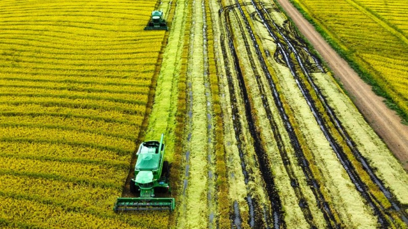

Identificando o Ponto Ideal de Colheita
Critérios Técnicos
Riscos da Colheita Fora do Ponto
Métodos de Colheita
Colheita Manual (Tradicional)
Colheita Mecanizada
Controle de Perdas Durante a Colheita
Principais Fontes de Perda
Técnicas para Minimizar Perdas
Pós-Colheita: Secagem e Armazenamento
Secagem dos Grãos
Armazenamento Adequado
Tecnologias que Estão Revolucionando a Colheita